“Quiz Game” Documentation by “demonisblack” v1.0
“Quiz Game”
Created: 2/22/2015
By: demonisblack
Email: demonisblack@gmail.com
Thank you for purchasing my game. If you have any questions that are beyond the scope of this help file, please feel free to email via my user page contact form here. Thanks so much!
Table of Contents
- Introduction
- Getting Started
- HTML Structure
- CSS Files and Structure
- JavaScript
- Game Functions
- Game Assets
- XML File
- Answer Layouts
- Build-In Editor Tool
- Compatibility
- Sources and Credits
- Changelog
A) Introduction - top
Quiz Game is a HTML5 game with free general knowledge quiz questions and multiple choice answers.
The ZIP package contains the game with 1024x768 resolution that scales proportionally to fit current screen device.
List of types of games:
- IQ Test

- Idiot Test
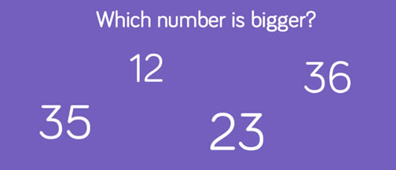
Build-In Editor Tool:
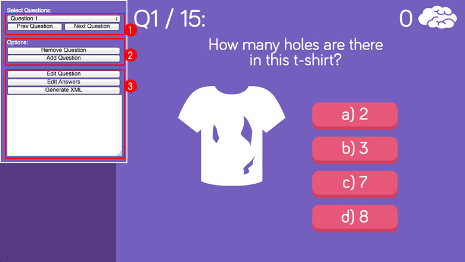
Total 17 type of answer layouts, maximum up to 8 answers choice:

B) Getting Started - top
To install the game just upload folder 'game' to your server. The game won't run locally with some browser like Chrome due to some security mode.
You need a website that runs PHP to make facebook share button work, and make sure to change Facebook Open Graph meta and Twitter meta in index.html, just replace [GAME_URL] to your game URL.
<!-- for Facebook -->
<meta property="og:image" content="[GAME_URL]/share.jpg" />
<meta property="og:url" content="[GAME_URL]" />
<!-- for Twitter -->
<meta name="twitter:image" content="[GAME_URL]/share.jpg" />
You can easily customize game text and settings in game.js file
var loadingText = 'LOADING...'; //text for loading...
var startButtonText = 'TAP TO START'; //text for start button
var categoryPage = true; //show/hide category select page
var categoryAllOption = true; //add ALL category select option
var categoryContinueText = 'SELECT CATEGORY'; //text for category page button
var categoryAllText = 'All'; //text for all category select option
var backgroundColour = '#755FBE'; //background colour
var questionTextColour = '#fff'; //question text colour
var answerTextColour = '#fff'; //answer text colour
var questionTextSize = 50; //question text size
var answerTextSize = 50; //answer text size
var textLineHeight = 5; //text line height
var questionTextDisplay = 'Q[NUMBER] / [TOTAL]:'; //current question and total question display
var questionTextAlign = 'center'; //question text align, for now only support align center
var questionStartY = 170; //question starting position y
var questionImageOffsetY = -60; //question image format offset y
var answerListsEnable = true; //enable answer list style
var answerLists = ['a) ','b) ','c) ','d) ','e) ','f) ','g) ','h) ']; //answer list style formatn, maximum 8
var answerAnimationEnable = true; //enable answer animation
var answerButtonBgEnable = true; //toggle answer button background
var answerButtonBgRoundNumber = 20; //answer button background round corner number
var answerButtonBgShadowNumber = 10; //answer button background shadow
var answerButtonBgColour = '#E7577A'; //answer button background colour
var answerButtonBgShadowColour = '#D03E61'; //answer button background shadow colour
var answeredButtonBgColour = '#FFCC46'; //answered button background colour
var answeredButtonBgShadowColour = '#FFA73A'; //answered button background shadow colour
var answerButtonPositionOffsetY = -15; //answer button background offsey y
var textHeight = 70; //text height
var textSpace = 25; //text spacing
var timerStart = 15; //timer start number
var timerBarHeight = 10; //timer bar height
var timerBarColour = '#fff'; //timer bar colour
var animateCorrectEnable = true; //toggle answer correct animation
var randomQuestionEnable = false; //toggle random question
var resultTitleText = 'BEST SCORE'; //text for result page title
var replayButtonText = 'TRY AGAIN'; //text for replay button
//Social share, [SCORE] will replace with game score
var shareText ='SHARE IT NOW'; //text for share instruction
var shareTitle = 'Highscore on Quiz Game is [SCORE]';//social share score title
var shareMessage = '[SCORE] is mine new highscore on Quiz Game! Try it now!'; //social share score message
The sound can be easily disabled to avoid compatibility issues in sound.js file:
var enableMobileSound = true;
If you wish to customize the question and answer via XML file, check out XML File section.
If you wish to customize the question and answer with build-in tool, check out Build-In Editor Tool section.
C) HTML Structure - top
The page start with the loader wrapper that covering the whole screen in the body. It shows loader progress when calls the function initPreload()
<!-- PERCENT LOADER START-->
<div id="mainLoader">0</div>
<!-- PERCENT LOADER END-->
This section is for browser not support page when calls the function checkBrowser(). It shows error message when detect the browser does not support canvas.
<!-- BROWSER NOT SUPPORT START-->
<div id="notSupportHolder">
<div class="notSupport">YOUR BROWSER ISN'T SUPPORTED.<br/>PLEASE UPDATE YOUR BROWSER IN ORDER TO RUN THE GAME</div>
</div>
<!-- BROWSER NOT SUPPORT END-->
Device rotate instruction page when calls the function checkMobileOrientation(). It shows rotate instruction when device is in portrait view.
<!-- ROTATE INSTRUCTION START-->
<div id="rotateHolder">
<div class="mobileRotate">
<div class="rotateDesc">Rotate your device <br/>to landscape</div>
</div>
</div>
<!-- ROTATE INSTRUCTION END-->
Follow by one canvas tag in the body. The game start initiatie by calls the main function of the game initMain().
<!-- CANVAS START-->
<div id="canvasHolder">
<canvas id="gameCanvas" width="1024" height="768"></canvas>
</div>
<!-- CANVAS END-->
D) CSS Files and Structure - top
I'm using two CSS files in this game. The first one is a generic reset file. Many browser interpret the default behavior of html elements differently. By using a general reset CSS file, we can work round this. This file also contains some general styling, such as anchor tag colors, font-sizes, etc. Keep in mind, that these values might be overridden somewhere else in the file.
The second file contains all of the specific stylings for the page.
E) JavaScript - top
This game using Javascript files below.
-
jQuery is a cross-platform JavaScript library designed to simplify the client-side scripting of HTML.
-
Detect Mobile Browser is a open source scripts to detect mobile browsers and phones.
-
CreateJs plugin is a suite of modular libraries and tools which work together to create interactive content on open web technologies via HTML5.
-
TweenMax is an extremely fast, lightweight, and flexible animation tool that serves as the foundation of the GreenSock Animation Platform (GSAP).
-
The game have the following js files
- init.js : check if browser or device support
- loader.js : loader to load all game images
- main.js : initiate game setup and browser resize function
- mobile.js : mobile orientation change
- canvas.js : canvas setup and resize
- sound.js : sound event
- game.js : game play and logics
- plugins.js : additonal useful plugins
- init.js : check if browser or device support
Complete game flow:
- The index.html file start init.js for browser detection
- If browser is supported, init loader.js to start load asserts with loading progress
- For mobile the rotate instruction shows when device is in portrait view, detect by mobile.js
- When all asserts contained in "/assets" folder are loaded, the game start construct canvas.js from main.js thats shows game menu
- If user click the screen in game menu, the game will start category page with game.js
- If user click select category in category page, the game will start with first question
- If user choose the right answer, user will score point and move to next question
- If user choose the wrong answer, the game will move to next question
- If user did not answer the question on time, game result will shows
- When all the question is complete, game result will shows
- If user click the screen in game result, it will restart the game
F) Game Functions - top
The most important functions used for page.
-
checkBrowser()
This function is runs for browser detection
-
checkMobileEvent()
This function runs for mobile event
The most important functions used for game.
-
initMain()
This function build canvas
-
startGame()
This function start gameplay
-
stopGame()
This function stop gameplay
G) Game Assets - top
The game contain 'design' folder which include following:
- quizgame_1024x768.psd - with layer folders below
- Result
- Gameplay
- Landing
The game contain 'animations' folder which include following:
- loader.fla - complete animation frames for loader
- brainidea.fla - complete animation frames for brain idea
The folder 'assets' in 'game' folder contains all the images of the game that can be replaced. Is better to have the same size of the old ones if you want to reskin the game graphic without coding.
H) XML File - top
You can easily build or edit Question and Answer in question.xml file
All Question and Answer are store in each XML item, sample code below:.
<?xml version="1.0" encoding="UTF-8"?>
<questions>
<item>
<category>IQ Test</category>
<question><![CDATA[Some months have 31 days,
some others have 30 days.
How many months have 28 days?]]></question>
<answers answerLayout='4type3' correctAnswer='3'>
<answer><![CDATA[6]]></answer>
<answer><![CDATA[2]]></answer>
<answer><![CDATA[12]]></answer>
<answer><![CDATA[11]]></answer>
</answers>
</item>
</questions>
Below is the explanation of each most important XML elements:
- category - is to categories the type of question (eg. IQ Test, Idiot Test), the category name will be display in category select option page, leave it empty if categoryPage option is set to false.
<category>IQ Test</category> - question - the question must enter in between <![CDATA[ ]]> in xml so the data contained therein will not be parsed as XMLs
- fontSize - attribute fontSize can set the text font size (number only), this is optional when the question is too long to adjust the font size smaller, leave it empty to load default font size
- audio - attribute audio is the audio file path for question, it must have MP3 and OGG file format for cross-browser compatible, only OGG format to be insert to XML data, it will auto change to MP3 if is not support.
<question fontSize='50' audio='assets/sounds/questions/question1.ogg'> <![CDATA[You are participating in a race. You overtake the second person. What position are you in?]]> </question>- type - attribute type can set to 'image' to load image as question instead of text, and the image path can insert into question element like below
<question type='image'>assets/questions/tshirt.png</question> - answers - the multiple choice answers can be insert here, maximum 8 answers
- answerLayout - attribute answerLayout is the layout options, there are total 17 type of layouts (check out Answer Layouts section.)
- correctAnswer - attribute correctAnswer is the right answer of the question, eg the answer is 7 'None'
- answerOffsetY - attribute answerOffsetY is the offset position y
<answers answerLayout='8type2' correctAnswer='7' answerOffsetY='-30'> <answer><![CDATA[Nomo]]></answer> <answer><![CDATA[Nuni]]></answer> <answer><![CDATA[Neno]]></answer> <answer><![CDATA[Nino]]></answer> <answer><![CDATA[Nena]]></answer> <answer><![CDATA[Nono]]></answer> <answer><![CDATA[None]]></answer> <answer><![CDATA[Nunu]]></answer> </answers>- answer - the answer must enter in between <![CDATA[ ]]> in xml so the data contained therein will not be parsed as XMLs
<answer fontSize='50' width="250" height="50" x='700' y='350'><![CDATA[2]]></answer>- fontSize - attribute fontSize can set the text font size (number only), this is optional when the answer is too long to adjust the font size smaller, leave it empty to load default font size
- width - attribute width is the width of the answer (number only, and apply to text not image)
- height - attribute height is the height of the answer (number only, and apply to text not image)
- x - attribute x is the position x of the answer
- y - attribute y is the position y of the answer
- Can customize your own layout with width, height, position x and y, leave it empty to load default layouts
- type - attribute type can set to 'image' to load image as answer instead of text, and the image path can insert into answer element like below
- audio - attribute audio is the audio file path for question, it must have MP3 and OGG file format for cross-browser compatible, only OGG format to be insert to XML data, it will auto change to MP3 if is not support.
<answer x='200' y='500' type='image' audio='assets/sounds/questions/question3_a2.ogg'> assets/questions/number1.png </answer>
I) Answer Layouts - top
There are total 17 type of layouts:
- 2type1

- 2type2

- 3type1
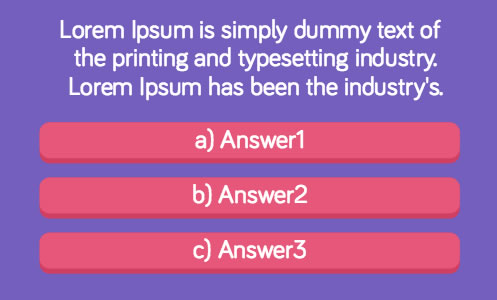 - 3type2

- 3type3
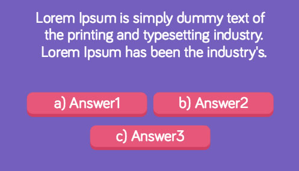 - 4type1
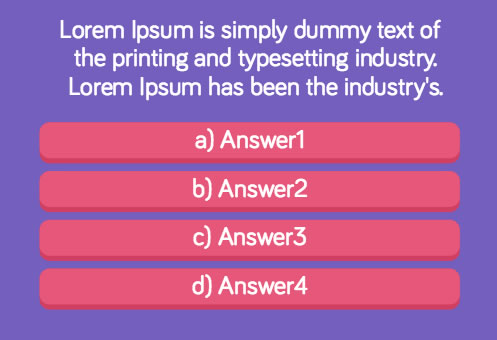 - 4type2
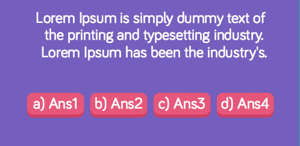 - 4type3
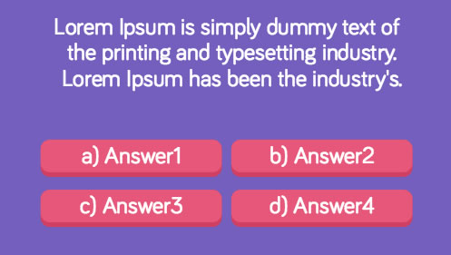 - 5type1

- 5type2

- 5type3
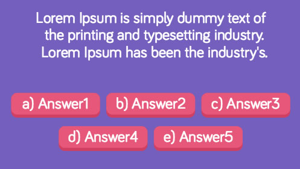 - 6type1
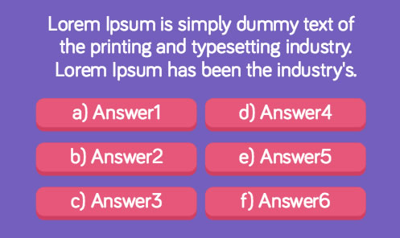 - 6type2

- 7type1
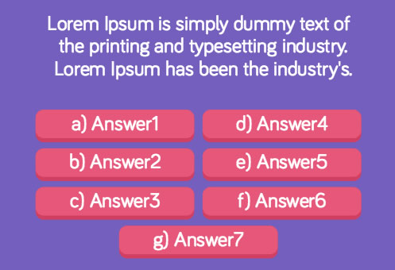 - 7type2

- 8type1

- 8type2
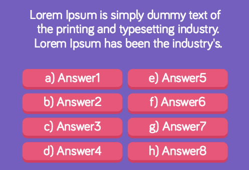
J) Build-In Editor Tool - top
This is the section where you can preview or edit the question and answer with the tool by running edit.html. The page start with edit tools.
- First select the quetions you want to edit.
- Option to add new or remove question.
- This section is to edit question and answers, and also output the new XML string.
- Edit Question - edit question settings
- Edit Answers - edit all answers settings
- Generate XML - click to generate new XML string, copy and replace into questions.xml for new update

- Edit question:
- Category - is to categories the type of question (eg. IQ Test, Idiot Test), the category name will be display in category select option page, leave it empty if categoryPage option is set to false.
- Type - option set to 'image' to load image as question instead of text
- Font Size - can set the text font size (number only), this is optional when the question is too long to adjust the font size smaller, leave it empty to load default font size
- Text - the question text or image path
- audio - attribute audio is the audio file path for question, it must have MP3 and OGG file format for cross-browser compatible, only OGG format to be insert to XML data, it will auto change to MP3 if is not support.
- Click preview question to see the new update, click back or done to save and go back main options.

- Answer layouts - there are total 17 type of layouts for multiple answers
- Answer setting:
- Correct Answer - is the right answer of the question, eg the answer is 2 '75'
- Offset Y - is the offset position y
- Answer list - multiple choice answers can be select to edit here, and option to add new or remove answer, only maximum 8 answers. (*If new answer is added, make sure to choose new answer layout to see new answer)
- Answer settings:
- Type - option set to 'image' to load image as answer instead of text
- Text - the answer text or image path
- Font Size - can set the text font size (number only), this is optional when the answer is too long to adjust the font size smaller, leave it empty to load default font size
- Width - is the width of the answer (number only, and apply to text not image)
- Height - is the height of the answer (number only, and apply to text not image)
- X - is the position x of the answer
- Y - is the position y of the answer
- audio - attribute audio is the audio file path for question, it must have MP3 and OGG file format for cross-browser compatible, only OGG format to be insert to XML data, it will auto change to MP3 if is not support.
- Can customize your own layout with width, height, position x and y, leave it empty to load default layouts
- Click preview answer to see the new update, click back or done to save and go back main options.
K) Compatibility - top
This game is build for Desktop browsers that support HTML5 canvas. Any mobile/tablet should work in landscape view, but they are not officially supported.
L) Sources and Credits - top
I've used the following font and sound files as listed.
- Comfortaa from file aajohan@gmail.com
- Creative brain from file freepik
- Sketchy baby faces from file freepik
- T shirt icons from file freepik
- 320655__rhodesmas__level-up-01.mp3 from file shinephoenixstormcrow
- game over from file fins
- level complete from file fins
- sf3-sfx-menu-select.wav from file broumbroum
- Whoosh.wav from file ztrees1
- Collect_Point_00.wav from file LittleRobotSoundFactory
- Menu Selection Click from file NenadSimic
- Easy Listening Piano vibes pad from file Jay Berlinsky
Once again, thank you so much for purchasing this game. As I said at the beginning, I'd be glad to help you if you have any questions relating to this game. No guarantees, but I'll do my best to assist. If you have a more general question relating to the games on CodeCanyon, you might consider visiting the forums and asking your question in the "Item Discussion" section.
If you like my game, please take a moment to rate it. Thanks!